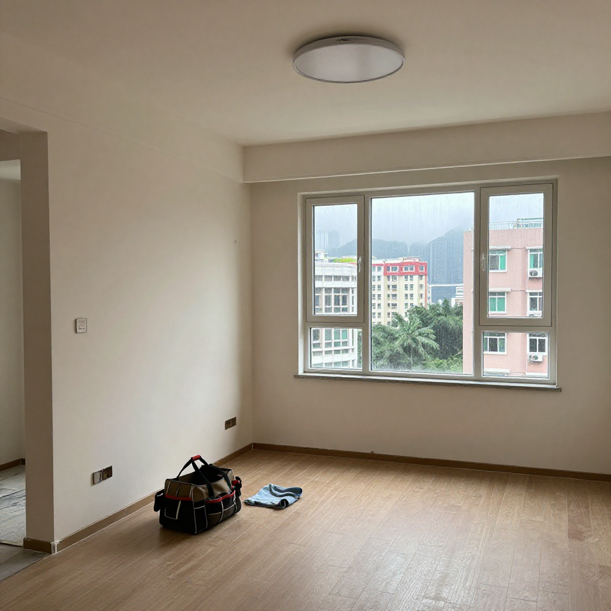
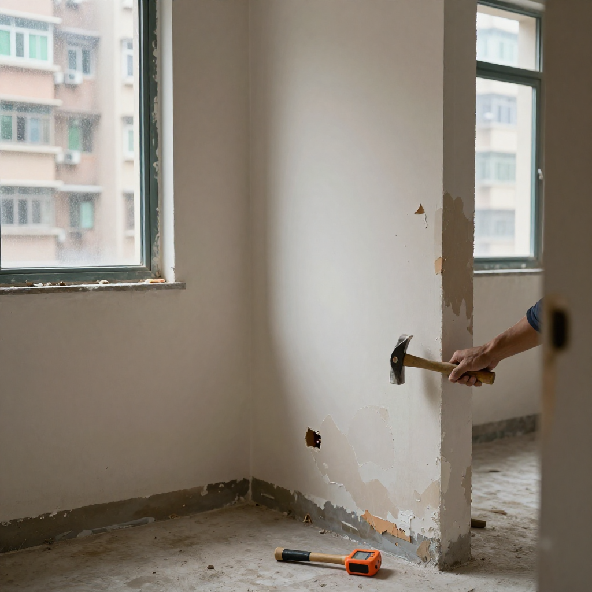
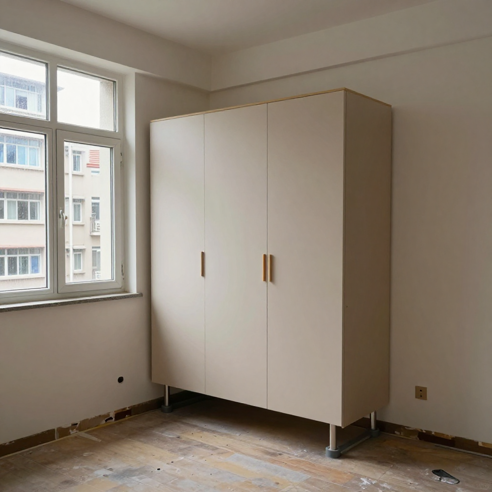
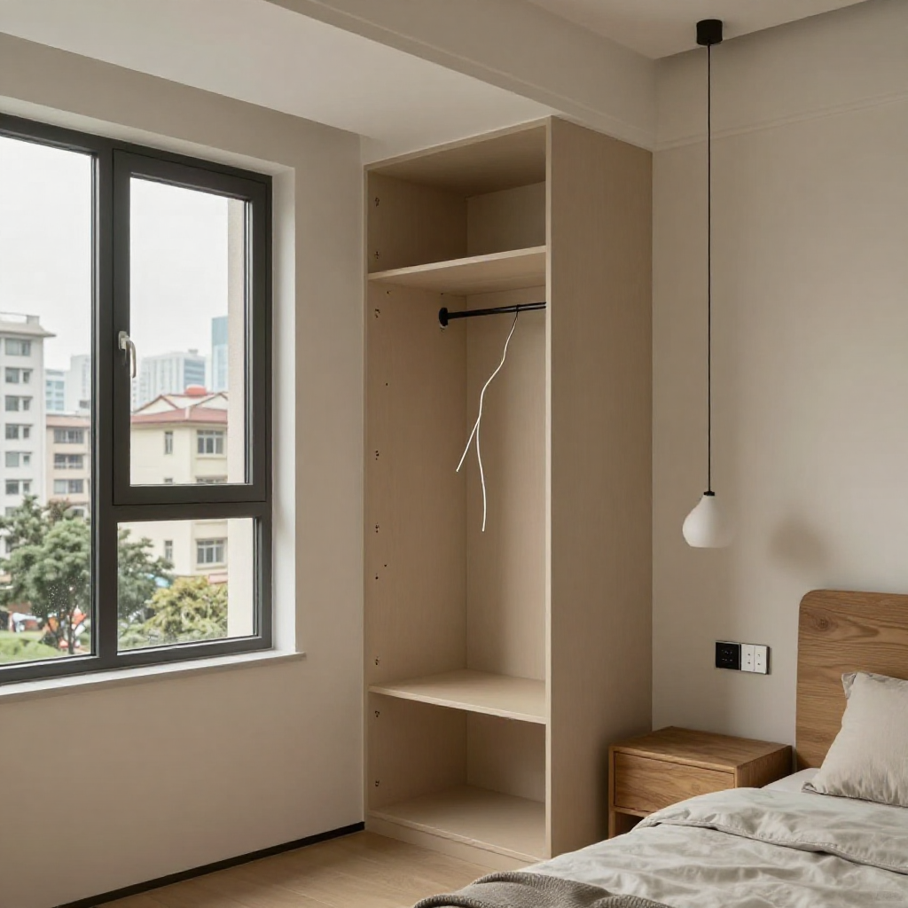

暴雨嚟之前，阿炳師傅先幫你諗到三年後嘅事

📍 場景：鰂魚涌康怡花園｜師傅：阿炳師傅（全屋定制廿八年）｜WhatsApp 報價：852 5190 2328
鰂魚涌，康怡花園。朝早八點幾，天文台話未來兩三小時部分地區雨勢較大，阿炳師傅搭叮叮到太古嗰陣，個天已經黑到似打翻咗墨水。（編者註：實際雨勢與警告信號，請以香港天文台最新公布為準。）
佢做全屋定制廿八年，風球雨季見得多，包入面永遠多一條毛巾同一對鞋套。今日開工嘅係一個四百幾呎舊單位，業主係一對三十出頭嘅夫婦，阿Yan同阿樂，啱啱上車，舊業主移民急放。
一、入門先摸牆腳：化妝樓唔可怕，發現得早係好彩
一入門，阿樂已經好興奮，舉住部新機畀阿炳睇。「炳哥，你有冇睇琴日Apple發布？iPhone Duo摺機啊，同埋18 Pro，我已經落訂啦！到時成屋智能家居，我要一把聲就開燈、開冷氣，櫃入面都要有無線充電！」
阿炳笑一笑，放低個工具袋，冇即刻應，反而蹲低摸咗下大廳幅牆腳。「後生仔，智能嘢我一定幫你留位。但你摸下呢度，淋淋哋，有啲粉起。琴晚落雨，呢幅外牆滲咗水入嚟。」
阿Yan行埋嚟一摸，即刻皺眉：「吓？睇樓嗰陣明明好乾淨，仲油過新漆嘅。係咪中招啦？」
「唔算中招，香港舊樓十居其九都係咁。」阿炳企起身，拎出把鐵錘仔輕輕敲，「你聽，呢聲空空哋，底灰已經鬆咗。業主臨走前翻油一次，係化妝樓，好多二手都係咁。你哋算好彩，而家未做櫃，發現得早。」

二、落地到頂唔係唔做得：呢幅外牆唔做得，櫃底一定要離地
阿樂有啲唔甘心：「咁我啲智能櫃仲做唔做到啊？我連圖都畫好晒，玄關櫃要落地到頂，好有氣勢㗎。」
「聽我講，你要做落地到頂，我唔反對，但呢幅牆唔做得。」阿炳搖搖頭，好認真，「香港靠海，鰂魚涌呢邊又當風，暴雨加回南天，牆身有水氣，木櫃直接貼牆，三年內實發霉。到時你部18 Pro幾靚都冇用，一打開櫃門陣霉味，衫都唔敢着。」
「第一，櫃底要離地。」阿炳用手指比咗一吋位，「所有近外牆、近廚廁嘅櫃，底板升高一吋半，用石塑底座加不鏽鋼腳，唔好用木腳。水嚟嗰陣掃得走，拖得到，木唔掂地，就唔會爛。第二，背板唔好封死，留透氣罅，仲要搽防潮油。好多師傅為咗好睇，將櫃背頂死落牆，靚係靚，一滲水成個櫃冇得救。」

三、智能嘢唔好而家買晒：先預留零火線同深底盒
阿樂諗咗諗：「咁我啲智能嘢呢？」
「呢個就係第二筆錢要擺嘅位。」阿炳笑，「你唔好而家買晒啲燈同插蘇。你要我幫你喺櫃入面、床頭、玄關，每個位都預留多一條零火線同一個深底盒。將來你換智能開關、感應燈帶，直接裝就得，唔使再鑿牆。你部摺機可以控制全屋，但前提係底線要夠，唔係到時成日跳掣。」
「我唔識用，但我識起樓。」阿炳一邊講一邊喺牆上畫線，「舊年有個客又係咁，乜都唔留，買晒返嚟叫我裝，結果零線唔夠，成個玄關要拆過，貴多兩萬。我唔想你哋行返呢條路。」
佢帶住兩公婆行到露台門口，指住個窗台位：「舊鋁窗膠邊已經硬化，落大雨一定入水。你哋預算唔多，我教你慳錢做法：窗唔使成隻換，換膠邊加做防水膠先頂住。慳返嚟嘅錢，擺喺防水同水電。」

四、識睇天先係師傅：黃雨黑雨前唔動木器
出面開始劈里啪啦落大雨，阿炳望出窗：「你睇，天文台真係準。做香港裝修，一定要識睇天。黃雨黑雨之前，唔好上油漆，唔好鋪地板，濕度太高，油漆唔乾，地板會脹。今日我哋唔動木器，先做防水同水電，等聽日乾身啲先再嚟。」
阿樂有啲唔好意思：「我以為裝修就係揀靚板、揀顏色。」
「靚係最後先諗。」阿炳拍拍佢膊頭，「我做咗廿八年，見過太多人將錢擺喺面，唔擺喺底。底做好，你住十年都唔使煩。」
落雨聲中，阿炳喺記事簿寫低：康怡，換窗膠、鏟底做防水、櫃離地一吋半、全屋預留零線。寫完，佢補咗一句：業主要智能，要叻，但要住得乾爽先。
收工嗰陣雨細咗，阿炳着返件雨褸，臨走同佢哋講：「你哋部新電話到咗，話我知，我教你用電話睇住個溫濕度計。香港住屋，防潮係一世嘅功課。」
叮叮車喺雨後嘅英皇道慢慢行過，阿炳上車，毛巾冚住個頭，諗起下一個單位喺土瓜灣，又係一幅要同水打交道嘅牆。
❓ 阿炳師傅心得：暴雨前三件事
Q1：點樣分辨化妝樓？
牆腳淋淋哋、起粉，錘仔輕敲聲空空哋，底灰已鬆。睇樓時油過新漆唔代表冇事，未做櫃之前發現，算好彩。
Q2：近外牆嘅櫃點做先襟住？
底板升高一吋半，石塑底座加不鏽鋼腳，唔用木腳；背板唔封死，留透氣罅兼搽防潮油。木唔掂地，就唔會爛。
Q3：想玩智能家居，裝修要預留咩？
櫃入面、床頭、玄關每個位預留多一條零火線同一個深底盒，唔好急住買晒燈同插蘇。底線夠，將來換智能開關、感應燈帶先唔使鑿牆。
提示：圖片為 SiliconFlow Z-Image-Turbo AI 生成的場景示意圖，不是任何實際住戶單位或政府官方照片。實際雨勢與警告信號，請以香港天文台最新公布為準。